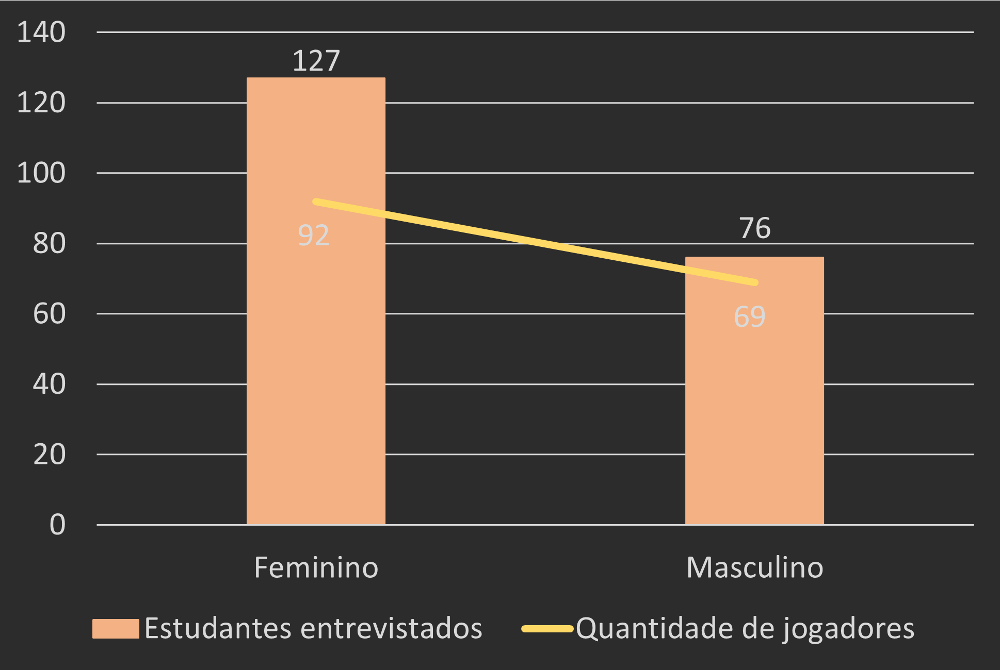
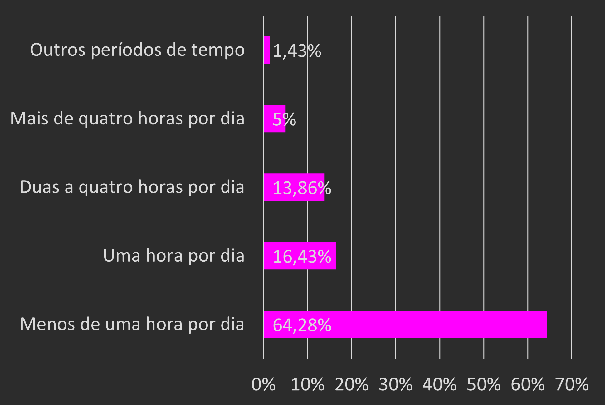
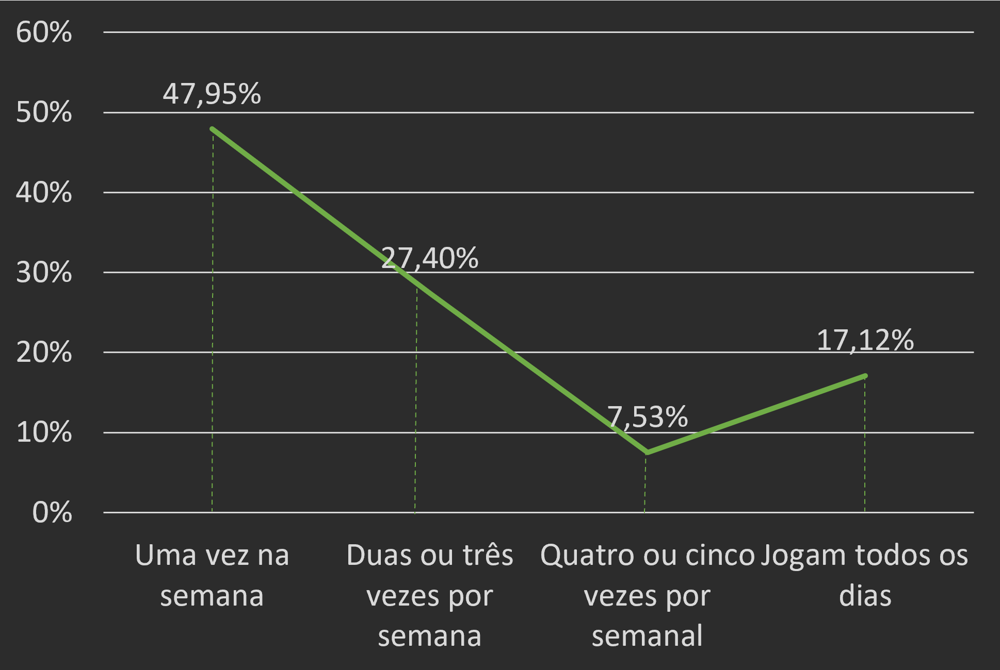
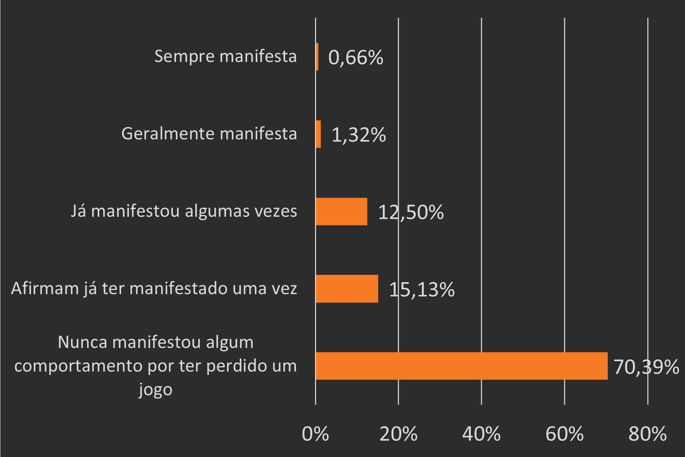
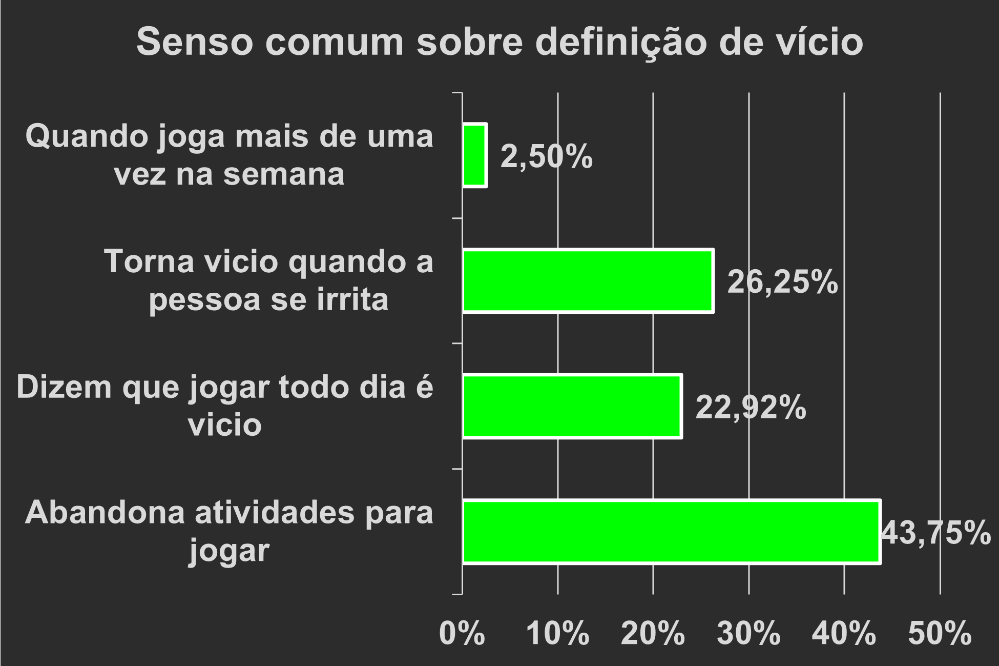
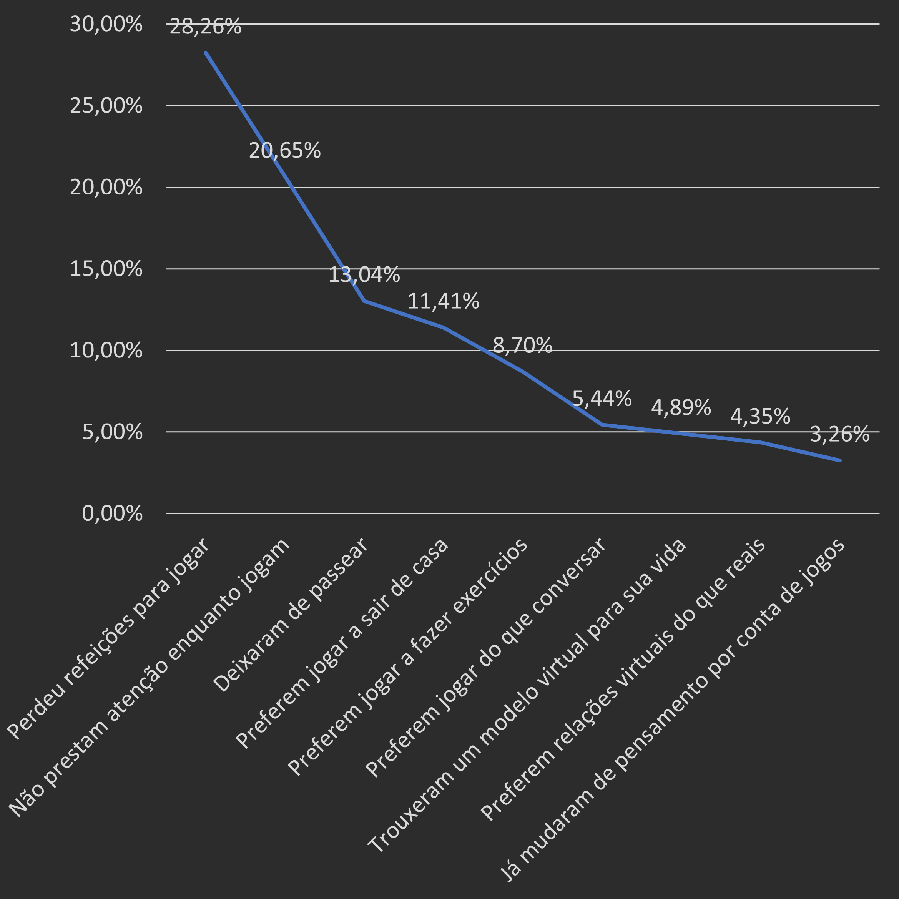
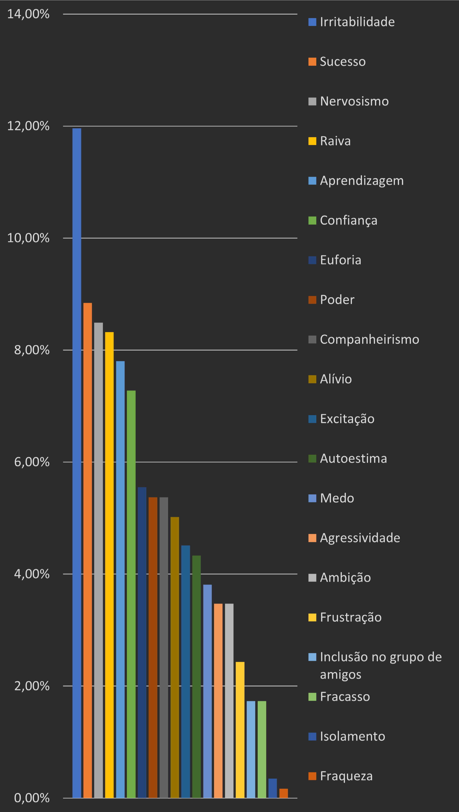

Inicialmente, foi realizado pelo grupo um formulário, de natureza qualitativa e quantitativa, que durante o
processo não obteve o número de respostas esperadas. Por conta disso, o grupo buscou uma pesquisa com o mesmo
conteúdo, porém com uma amostra maior.
A pesquisa obtida apresentou 203 participantes de duas escolas do Ensino Médio, de Santa Catarina.
Para a coleta dos dados, foi elaborado um questionário baseado em 3 aspectos norteadores:
Representação e significação do conceito de jogos, substituição de relações reais por virtuais e tempo
gasto nessas atividades. A partir disso, foram coletados os dados presentes no gráfico 1.
A primeira questão abordada foi o sexo dos entrevistados e quantos deles fazem o uso dos jogos.
Ao observar os resultados, foi possível concluir que mesmo a maioria dos entrevistados pertencendo ao sexo
feminino, quando se trata de proporção, os homens representam uma maioria, tendo 90,8% dos
entrevistados como jogadores, enquanto as mulheres apresentam apenas 72,44% dos entrevistados como jogadoras.

A segunda questão abordada foi a frequência em que os jogos eram utilizados no dia a dia dos jovens.
A partir dos gráficos 2 e 3, conclui-se que apesar de a maioria dos entrevistados serem jogadores, são poucos que
trazem os jogos como algo importante e realmente presente em seu cotidiano, seja pela frequência semanal,
ou pela quantidade de horas jogadas diariamente, conforme revela o gráfico que apenas 18,86% dos entrevistados
jogam duas horas ou mais por dia, enquanto 80,71% jogam uma hora ou menos por dia. E isso se repete na
frequência semanal, na qual apenas 24,65% jogam quatro vezes ou mais por semana.
Outro tópico abordado foi as situações que os jogadores já vivenciaram durante suas experiências.
O resultado obtido nesse tópico (gráfico 4) foi preocupante e mostra uma realidade perigosa dos jogos, onde
diversos jogadores deixaram de lado aspectos importantes de sua vida, desde algo básico como refeições até
algo mais complexo, como a substituição de relações físicas por relações virtuais.
Apesar de a porcentagem referente à aspectos sociais, como relações virtuais, deixar de conversar ou sair
de casa, estarem em minoria, elas são as que mais chamam atenção, pois mostram que nessas situações os jogos
se tornaram o mais essencial para o jogador, afetando assim sua vida em diferentes aspectos,
sejam eles pessoais, profissionais ou sociais.
O gráfico 5 apresenta um tópico da pesquisa referente aos sentimentos já vivenciados pelos entrevistados
durante sua jogatina. Ao analisar os resultados, foi observado que os sentimentos mais frequentes são
a irritabilidade, sucesso, nervosismo, raiva e aprendizagem.
A partir disso é possível afirmar que os jogos podem despertar sentimentos positivos nos adolescentes,
como a confiança e aprendizagem, mas também podem despertar sentimentos negativos, como a irritabilidade e raiva.
Por se tratar de um ambiente de conquista e de interação com diferentes pessoas, é esperado que tais
sentimentos sejam os mais frequentes, porém é imprescindível que haja um monitoramento e um controle,
seja por parte dos jogadores ou por parte daqueles que o cercam, para que esses sentimentos negativos não se tornem predominantes.
Por se tratar de um ambiente de conquista e de interação com diferentes pessoas, é esperado que tais
sentimentos sejam os mais frequentes, porém é imprescindível que haja um monitoramento e um controle,
seja por parte dos jogadores ou por parte daqueles que o cercam, para que esses sentimentos negativos não se tornem predominantes.
A partir dos sentimentos apresentados pelos entrevistados, foi feito um questionamento baseado
em suas respostas, tendo como principal foco a manifestação dos sentimentos negativos pelos
jogadores, obtendo os resultados descritos no gráfico 6.
Ao analisar os dados da pesquisa, concluiu-se que a grande maioria dos entrevistados não
manifestam esses sentimentos em seu cotidiano, o que demostra um feito positivo.
Apesar de ser uma minoria, o grupo de entrevistados que mais chama atenção certamente são aqueles que
apresentam traços de violência enquanto jogam. É importante ressaltar que os jogos eletrônicos, em sua
maioria, são on-line e exigem uma interação interpessoal, por conta disso, é pressentido que os
jogadores apresentem esse sentimento.
Diante disso, se torna algo preocupante, tendo em vista que o jogo deixa de ser algo exclusivamente voltado
para o entretenimento e passa a ser apenas fruto de um vício. Porém, há casos em que jogadores com uma
natureza agressiva utilizam dos jogos para exacerbar os sentimentos acumulados no seu cotidiano,funcionando como uma “válvula de escape”.
Segundo a definição dada pela OMS, uma pessoa pode ser considerada viciada em um jogo ao
apresentar falta de controle sobre o jogo, priorizar os jogos em relação a outros interesses cotidianos,
continuação do ato de jogar, apesar das consequências negativas, e quando o padrão de
comportamento é de gravidade suficiente para afetar sua vida em aspectos sociais, familiares,
educacionais e pessoais.
Ao comparar a caracterização de vício feita pela OMS com as opiniões dos entrevistados sobre o que
é o vício, nota-se que há um desconhecimento que gera uma ideia errônea sobre esse tema, pois apenas 43,75%
dos entrevistados (gráfico 7) tiveram como resposta uma das características apresentada pela OMS.
Gráficos
1
2
3
5
6
7
4
Fontes de Referência
FRANCISCO RIBEIRO, G.Doença? Calma...: Vício em games agora é um transtorno mental: como isso pode ajudar ou atrapalhar quem joga muito.
Disponível em: https://www.uol.com.br/vivabem/reportagens-especiais/o-vicio-em-jogos-e-considerado-disturbio-mental-quais-os-perigos-da-doenca/#page2 Acesso em: 9 set. 2021.
DA SILVA CAVALLI, F.; CERON TREVISOL, M. T.; VENDRAME, T.Influência dos jogos eletrônicos e virtuais no comportamento social dos adolescentes. Artigo—[s.l: s.n.]. Acesso em:01 jul. 2021.
DETONI BARBOSA, B.; PASTI ALTRAN, K. E.;SGUBIN, R.; PESQUISA SOBRE A INFLUÊNCIADOS JOGOS ELETRÔNICOS NO COTIDIANO DOS ADOLESCENTES.,15 jul. 2021. Disponível em: https://forms.gle/E3wi56LnGSdtYJat9. Acesso em: 9 set. 2021
LARGHI, N. Com pandemia, mercado de games cresce 140% no Brasil, aponta estudo. Disponível me: https://valorinveste.globo.com/objetivo/gastar-bem/noticia/2021/01/23/com-pandemia-mercado-de-games-cresce-140percent-no-brasil-aponta-estudo.ghtml. Acesso em: 4 nov. 2021.
Disponível em: https://www.uol.com.br/vivabem/reportagens-especiais/o-vicio-em-jogos-e-considerado-disturbio-mental-quais-os-perigos-da-doenca/#page2 Acesso em: 9 set. 2021.
DA SILVA CAVALLI, F.; CERON TREVISOL, M. T.; VENDRAME, T.Influência dos jogos eletrônicos e virtuais no comportamento social dos adolescentes. Artigo—[s.l: s.n.]. Acesso em:01 jul. 2021.
DETONI BARBOSA, B.; PASTI ALTRAN, K. E.;SGUBIN, R.; PESQUISA SOBRE A INFLUÊNCIADOS JOGOS ELETRÔNICOS NO COTIDIANO DOS ADOLESCENTES.,15 jul. 2021. Disponível em: https://forms.gle/E3wi56LnGSdtYJat9. Acesso em: 9 set. 2021
LARGHI, N. Com pandemia, mercado de games cresce 140% no Brasil, aponta estudo. Disponível me: https://valorinveste.globo.com/objetivo/gastar-bem/noticia/2021/01/23/com-pandemia-mercado-de-games-cresce-140percent-no-brasil-aponta-estudo.ghtml. Acesso em: 4 nov. 2021.